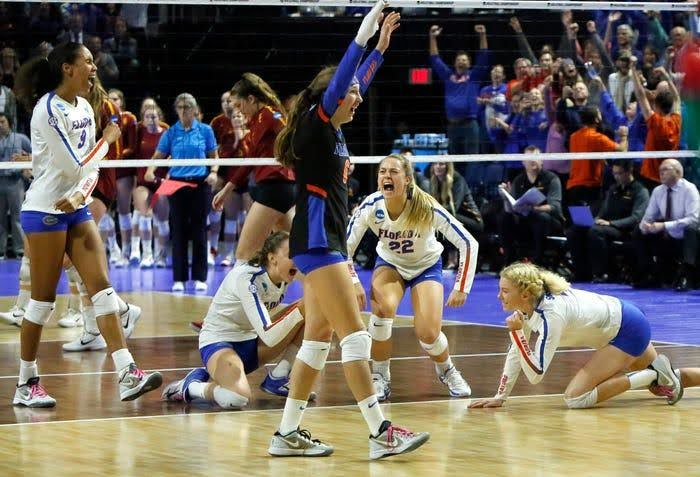
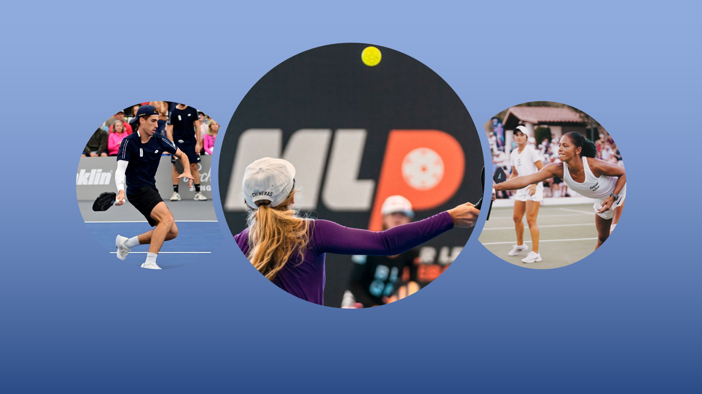
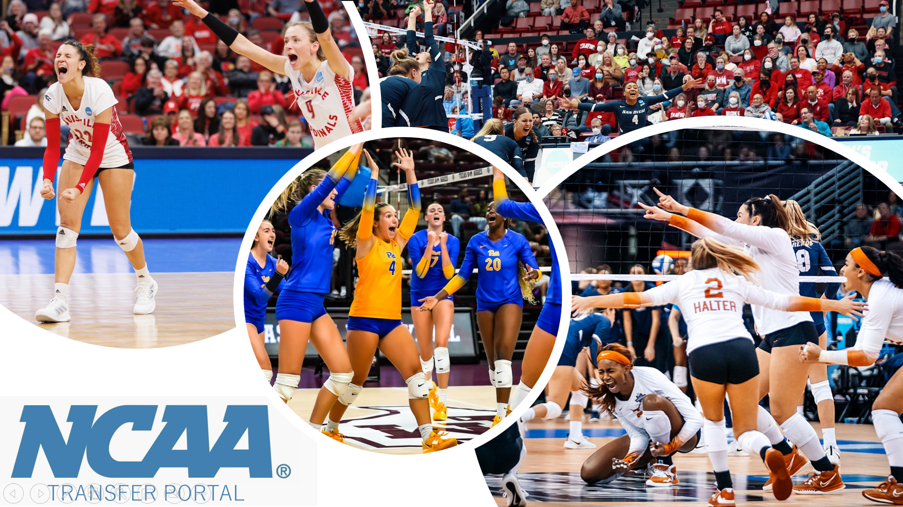
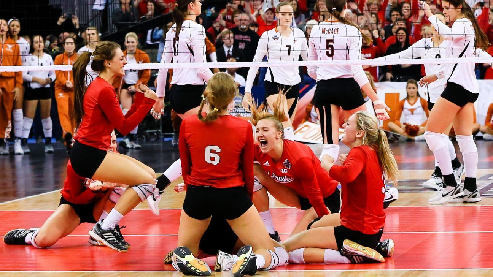

Set, Rotate, Dominate
In the ever-evolving landscape of NCAA volleyball, the decision between running a 5-1 or 6-2 rotation can significantly shape a team’s offensive strategy and overall success. The 5-1 system, which relies on a single…

In the ever-evolving landscape of NCAA volleyball, the decision between running a 5-1 or 6-2 rotation can significantly shape a team’s offensive strategy and overall success. The 5-1 system, which relies on a single…

Before I started playing volleyball, I first watched it. And I’ve watched A LOT of volleyball games – some had me on the edge with each point while others simply made me fall asleep. Delving into the highs and lows of…

The 2023 NCAA March Madness Women’s Basketball Tournament final was certainly not one to forget. The high profile matchup featured the Iowa Hawkeyes and the LSU Tigers. In an exciting match, the Tigers won their first…

Fall is my favorite time of the year – it’s the start of a brand-new school year, sweater weather is sweet and cozy, and most importantly, it is volleyball season! In the world of collegiate women's volleyball, the…

Pickleball is America’s fastest growing sport, as well as the world’s fastest growing sport. I first heard about pickleball when my sister and my dad played pickleball together during the previous winter break – they…

Established on October 15, 2018, the NCAA Transfer Portal is proving to be transformational in collegiate athletics on all levels. This virtual portal provides an organized system for managing athletes’ transfer…
Concussions are the most common sports injury. According to University of Michigan Health, about 3.8 million concussions occur each year in the U.S. from sports-related and recreational injuries. Additionally, 20% of…

Right after the NCAA Women's D1 Volleyball Tournament for the 2022 Fall Season began, NCAA reporter and host Michelle Chester put together a list of the top 10 teams in US Women's Collegiate volleyball. The top two…